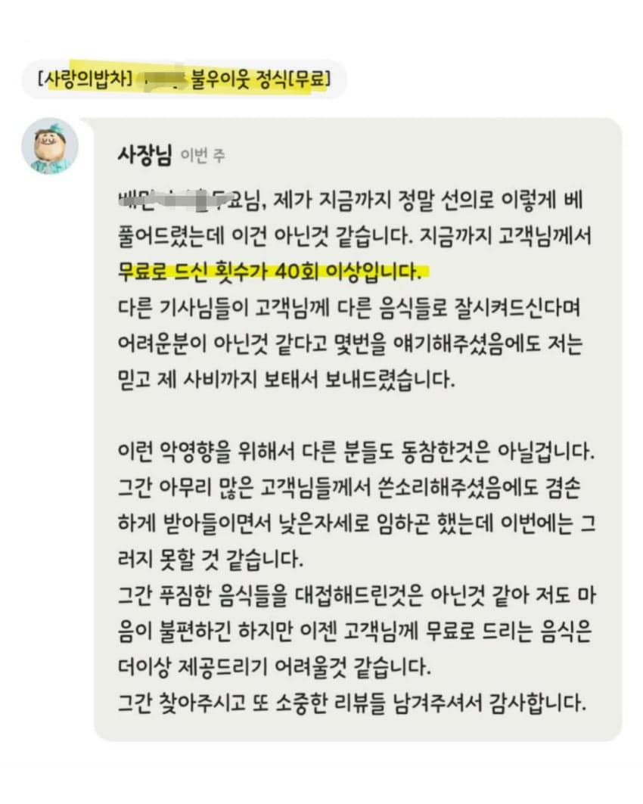

131 · 2 · 13 시간 전 · 원문

수집 당시 댓글 2개
매드햄스터 · 1 시간 전
애초에 바닥에 있는 사람은 자신이 바닥에 있는지 모름.
근데 행동거지나 마인드는 바닥을 넘어서 시궁창임.
이전에 알던 사람이 사회복지사였는데,
정말 힘들어 보이는 사람 성심성의껏 도와줬더니
나중에는 그게 당연한 권리가 되어있었고, 조금 일이 많아서
신경 못써줬더니 씨발년, 자기만 안도와준다는 개 쌩년이라고
개지랄을 떨었음.
듣는데 진짜 인류애 개박살남.
음바코 · 56 분 전
불우이웃 정식이라는 무료메뉴가 있다는것도 놀랍고
사장님 진짜 대단하신분같음

애초에 바닥에 있는 사람은 자신이 바닥에 있는지 모름.
근데 행동거지나 마인드는 바닥을 넘어서 시궁창임.
이전에 알던 사람이 사회복지사였는데,
정말 힘들어 보이는 사람 성심성의껏 도와줬더니
나중에는 그게 당연한 권리가 되어있었고, 조금 일이 많아서
신경 못써줬더니 씨발년, 자기만 안도와준다는 개 쌩년이라고
개지랄을 떨었음.
듣는데 진짜 인류애 개박살남.